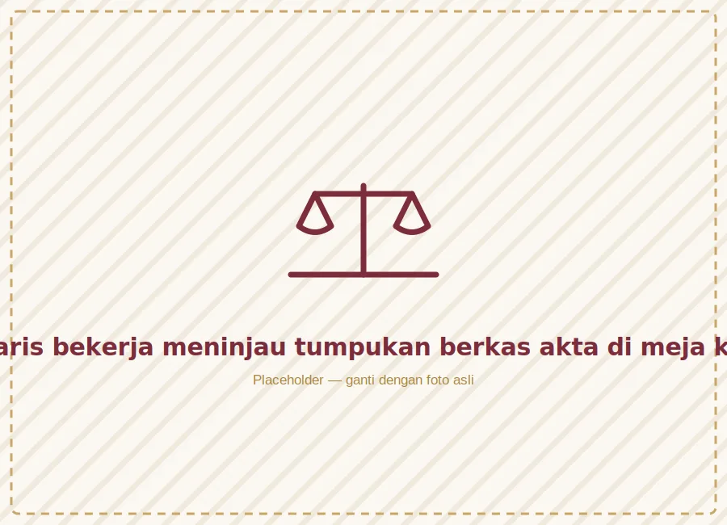

Adiwangsa berdiri dari keyakinan sederhana: dokumen hukum yang baik lahir dari pemahaman yang jujur atas kebutuhan setiap klien — bukan sekadar templat pasal.

Menjabat sebagai Notaris & Pejabat Pembuat Akta Tanah (PPAT) sejak tahun 2005, Kirana Adiwangsa memulai kariernya sebagai asisten notaris di Semarang sebelum mendirikan kantor sendiri pada 2008. Berbekal gelar Magister Kenotariatan, ia dikenal atas pendekatannya yang teliti namun tetap mudah diajak berdiskusi oleh klien dari berbagai latar belakang.
Selain menangani akta perorangan, kantor ini juga dipercaya sejumlah usaha kecil-menengah dan pengembang properti lokal untuk pendampingan legalitas jangka panjang.
Menjadi kantor notaris rujukan di Jawa Tengah yang dikenal karena ketelitian hukum sekaligus kemudahan dipahami oleh siapa pun, dari perorangan hingga pelaku usaha.
Menjunjung kode etik jabatan dan bertindak netral bagi seluruh pihak yang terlibat.
Menghormati waktu Anda dengan estimasi proses yang realistis dan terkomunikasi jelas.
Menjelaskan konsekuensi hukum secara utuh, bukan hanya bagian yang mudah didengar.
Dokumen dan informasi klien disimpan dengan standar kerahasiaan jabatan notaris.
Kirana Adiwangsa diangkat sebagai notaris dan mulai berpraktik sebagai asisten di kantor notaris senior di Semarang.
Kantor Notaris & PPAT Adiwangsa resmi dibuka dengan dua staf pendukung dan fokus pada akta pertanahan.
Menambah layanan pendirian badan usaha seiring tumbuhnya kebutuhan UMKM di Jawa Tengah.
Mencapai tonggak 3.000 akta diterbitkan, memperkuat kepercayaan klien lintas generasi.
Memperkenalkan sistem penjadwalan dan pemantauan berkas daring bagi klien.
Terus berkembang dengan tim yang lebih besar tanpa mengorbankan ketelitian dan kehangatan layanan.
Tim kecil dengan tanggung jawab besar — memastikan setiap berkas Anda diproses dengan cermat dari awal hingga akhir.
Notaris & PPAT
Kepala Staf Notaris
Spesialis Pertanahan
Legalitas Badan Usaha